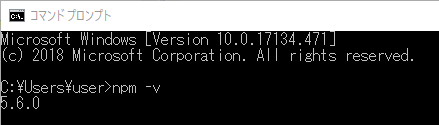
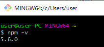
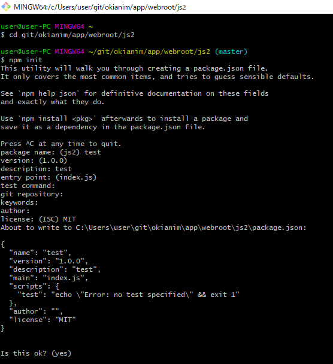
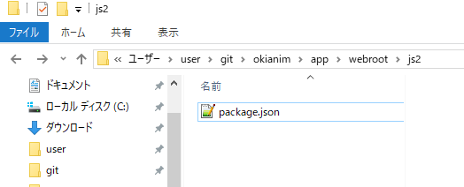
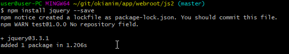
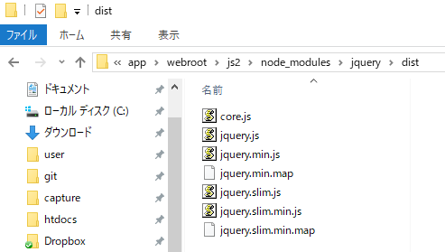

npmの導入からjQueryのインストールまでの手順(Git bash for windows)
手順
-
npmコマンドを使えるようにするにはnode.jsをインストールする必要がある。
node.jsのサイト
にWindows用インストーラが用意されているので、普通にダウンロードしてインストールする。
-
node.jsのインストールが完了したらコマンドプロンプトやGit Bashでnpmコマンドが使えるようになる。
-
npmコマンドが使えるかどうか、バージョン確認してみる。
npm -v
コマンドプロンプト

Git Bash

-
続いて、npmでjQueryをインストールする。
まず、jQueryをインストールする場所にカレントディレクトリを移動する。
$ cd git/okianim/app/webroot/js2
-
「nmp init」コマンドでpackage.jsonを作成する。
$ nmp init
jQueryなどのモジュールはパッケージと呼ばれ、package.jsonで管理されている。
package.jsonはcomposerのjsonファイルとよく似た概念。

-
「nmp init」コマンドの実行によりpackage.jsonファイルがカレントディレクトリに作成されているのを確認する。

-
jQueryをインストール
$ npm install jquery --save

package.jsonにjQueryの情報が書き込まれるとともに、node_modulesフォルダが作成される。
node_modulesフォルダ内にjQueryがインストールされている。
node_modules\jquery\dist

以上でjQueryのインストール完了
補足：package.jsonの活用場面
複数のPC環境に同一のパッケージをインストールしたいときにpackage.jsonは活躍する。
package.jsonにパケージ情報が書き込まれているなら「npm install」だけでインストール可能。
つまり、package.jsonを別PC環境に配布するだけで、同一のパッケージをインストールできるようになる。
バージョン確認
$ npm -v
パッケージをインストール
Vueをインストールする場合
$ npm install vue
以下のような省略版ある。
$ npm i vue
メジャーバージョンを指定し、その中で最新バージョンをインストールする方法。
vue2系の最新バージョンをインストールする場合
$ npm install vue@^2.0.0
「^」がメジャーバージョンの固定を意味している。
旧
jQueryをインストールする場合
$ npm install jquery --save
パッケージのモジュールがカレントディレクトのnode_modulesディレクトリ配下にインストールされる。
また、package.jsonにもインストールしたパッケージの情報が記述される。
パッケージをアンインストール
Vueをアンインストールする
npm uninstall vue
旧
jQueryをアンインストールする場合
$ npm uninstall jquery --save
パッケージのモジュールがカレントディレクトのnode_modulesディレクトリ配下からアンインストールされる。
また、package.jsonのパッケージ情報からもjQueryに関する記述が削除される。
パッケージを一覧表示
cdコマンドで、package.jsonは配置されているディレクトリに移動し、下記コマンドを実行する。パッケージのバージョンも確認できる。
npm ls
例
$ npm ls
public@ C:\Users\user\git\CrudBaseBulk2\public
+-- bootstrap-icons@1.10.5
+-- bootstrap@5.3.1
+-- jquery@3.7.1
`-- vue@2.7.14
xxx
- ホーム
- プログラミングの覚書
- Node.jsの覚書
- npmの覚書